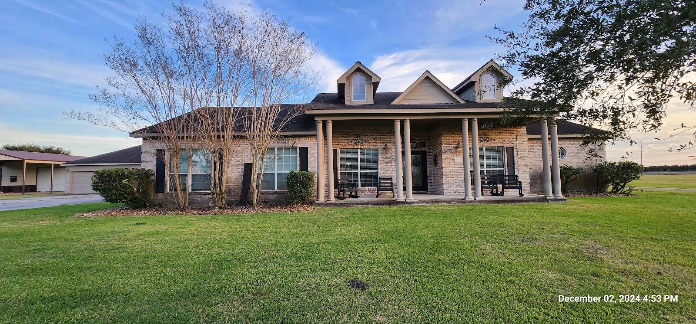
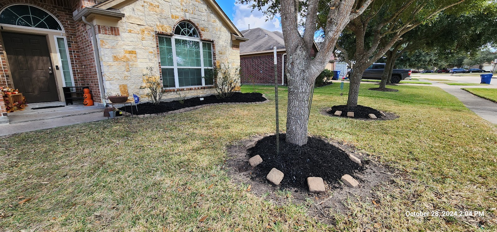
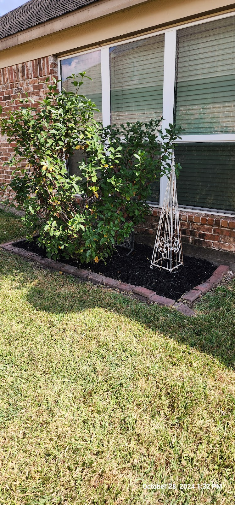
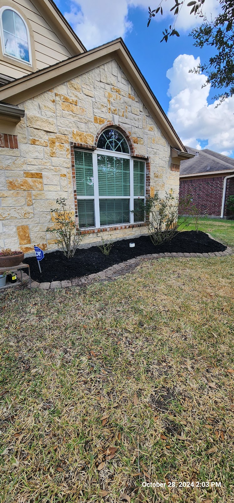
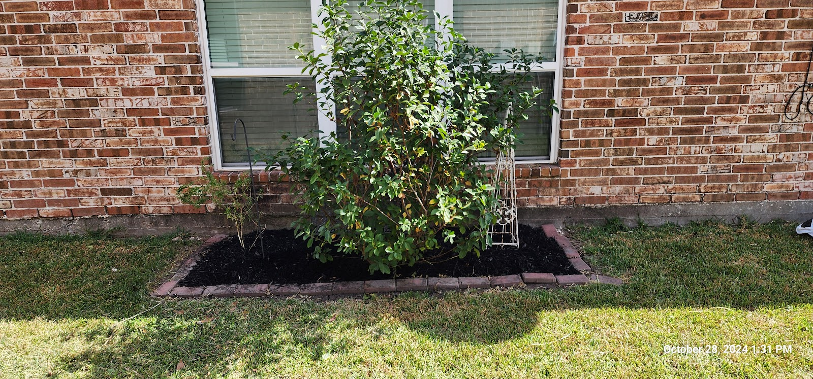
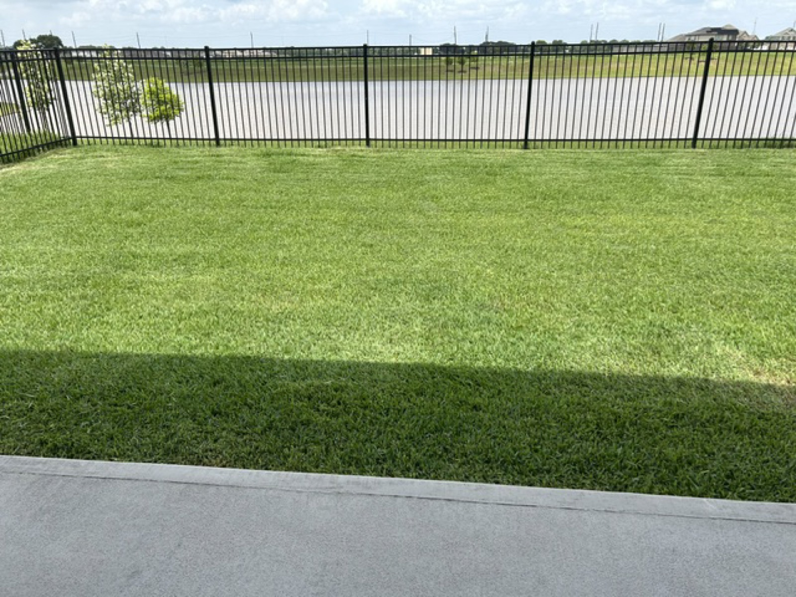
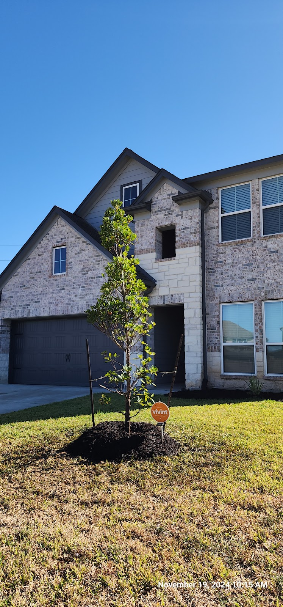

Mowing & Edging
Clean, even cuts with crisp edging along drives, walks and beds — every visit.
Rosenberg · Fort Bend County lawn care
Owner-operated mowing, edging and yard care in Rosenberg — dependable weekly service from a crew your neighbors already trust.
What we do
Weekly and bi-weekly maintenance plus the seasonal work that keeps a Rosenberg yard looking its best year round.
Clean, even cuts with crisp edging along drives, walks and beds — every visit.
Weekly or bi-weekly service on a schedule you can count on.
Fresh mulch, defined bed lines and tidy plantings that lift the whole yard.
New sod install and lawn repair for bare or worn spots.
Shrubs and small trees shaped and cleaned up.
Spring and fall clean-ups, leaf haul-off and storm tidy-ups.
Recent work
Real work from around Fort Bend County — mowed lawns, fresh beds and new plantings.







What neighbors say
“Stanley's been cutting my yard for over a year. He is dependable, reliable and is excellent at what he does. I would highly recommend him.”
— Miguel Rodriguez, Google review
“Stanley does a great job! He is prompt, professional and knowledgeable. He has my yard looking great. Very glad I found his lawn service when I did.”
— Irene Otto, Google review
“Very reliable and communicative! Did a great job on my yard and sent me photos of completed work. Would definitely work with again!”
— Inna Yang, Google review
Get in touch
Serving Rosenberg, Richmond & Fort Bend County. Call or email for hours & a free estimate.